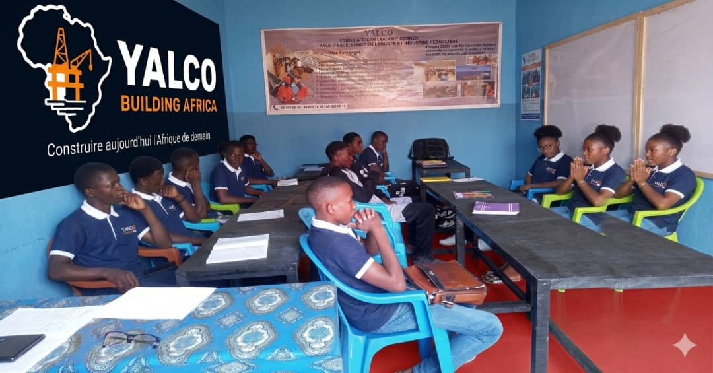
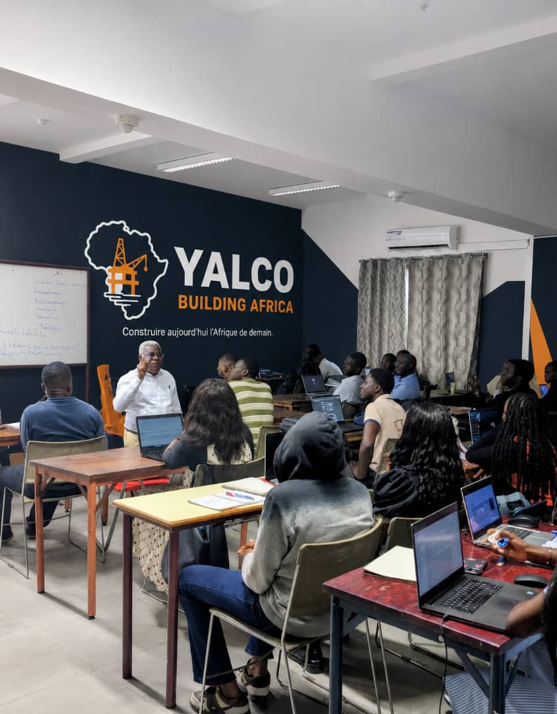

Depuis 2009, YALCO – Building Africa forme une main-d'œuvre qualifiée et prête pour l'industrie : pétrole & gaz, énergie, BTP, langues et numérique. Since 2009, YALCO – Building Africa has trained a skilled, industry-ready workforce: oil & gas, energy, construction, languages and digital skills.
Depuis 2009, chaque programme YALCO repose sur les mêmes fondations : une pédagogie pratique, des standards élevés et une vision claire pour l'Afrique. Since 2009, every YALCO program rests on the same foundations: hands-on teaching, high standards, and a clear vision for Africa.
Des programmes techniques et professionnels conçus selon les standards de l'industrie.
Technical and professional programs built to industry standards.
Des standards élevés de qualité, de rigueur et de réussite des apprenants.
High standards of quality, rigor, and learner success.
Des méthodes modernes, des technologies actuelles et des approches nouvelles.
Modern methods, current technologies, and new approaches to learning.
Préparer une nouvelle génération de professionnels et de leaders africains.
Preparing a new generation of African professionals and leaders.
Fondé en 2009 à Pointe-Noire par Nzenza Moungabio Melvy Andrel Dalvin, YALCO – Building Africa forme une nouvelle génération de techniciens, professionnels et leaders capables de contribuer à l'avenir industriel et économique de l'Afrique. Founded in 2009 in Pointe-Noire by Nzenza Moungabio Melvy Andrel Dalvin, YALCO – Building Africa trains a new generation of technicians, professionals, and leaders able to contribute to Africa's industrial and economic future.
Ateliers, simulations, exercices techniques et projets concrets.
Workshops, simulations, technical exercises, and real projects.
Orientation, coaching professionnel et mise en relation avec les employeurs.
Career guidance, professional coaching, and employer connections.
Honnêteté, transparence et standards professionnels les plus élevés.
Honesty, transparency, and the highest professional standards.
De l'industrie pétrolière aux langues professionnelles, chaque pôle prépare nos apprenants aux exigences réelles du marché. From the oil industry to professional languages, every division prepares learners for the real demands of the job market.


Une discipline professionnelle et une vision africaine, à chaque promotion depuis 2009. Professional discipline and an African vision, in every cohort since 2009.
Nous préparons les apprenants non seulement à trouver des opportunités, mais à les créer. Nous construisons des compétences. Nous construisons des carrières. Nous construisons l'Afrique. We prepare learners not only to find opportunities, but to create them. We build skills. We build careers. We build Africa.